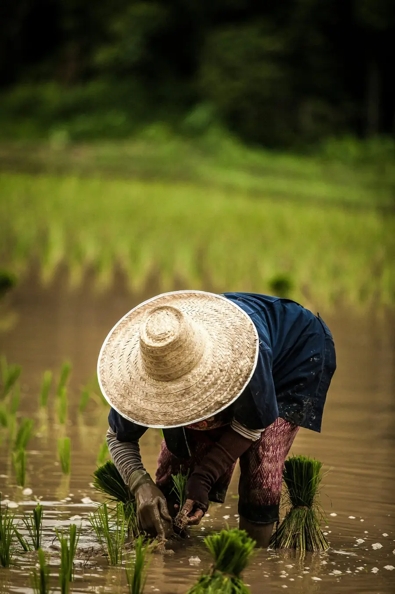
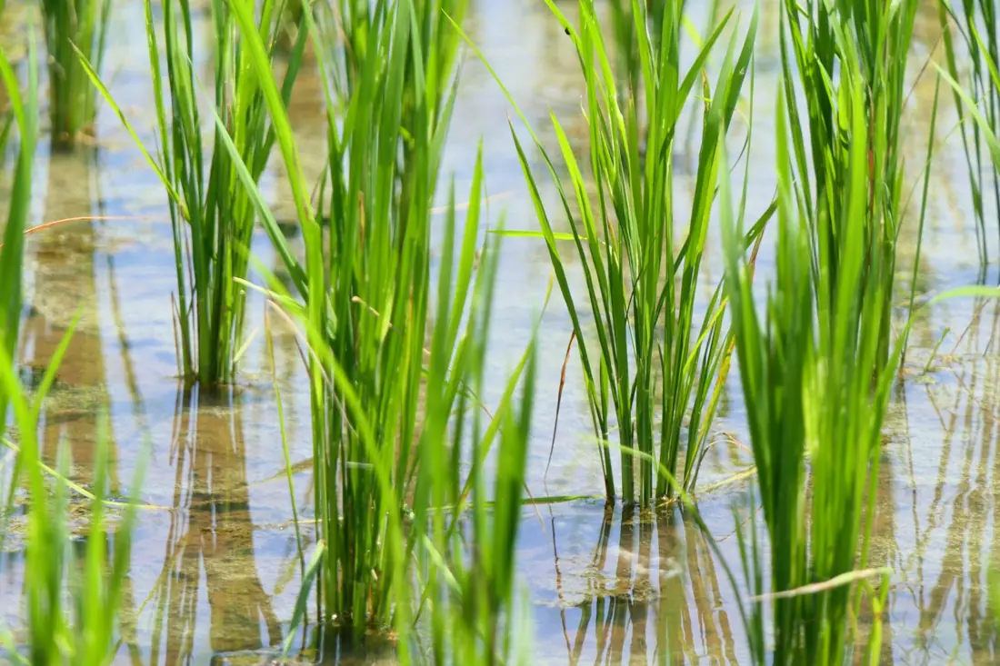
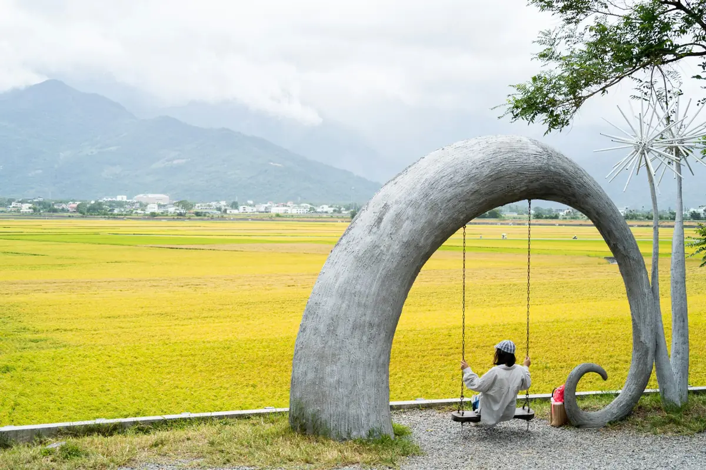

高雄 139 號
米粒圓、黏度適中，放涼了還是軟的。最適合帶便當、捏飯糰。
口感軟．Q
香氣中
碾米度白米
NT$ 4202 kg
一碗白飯，大概是三千粒。也就是二十幾株稻，在田裡站了一百多天。

我們在海岸山脈和中央山脈之間種米。秀姑巒溪上游的水冷，日夜溫差大，稻子長得慢，米粒反而飽滿。我們不追求產量，只想把每一粒都照顧到。
縱谷一年種兩期。一期稻生長期長，米粒最結實，是我們的主力。

稻穀帶殼保存最穩定。一碾成白米，香氣就開始散。所以倉庫裡放的是稻穀，碾米機等你的訂單才開。
全部 2 公斤真空包，碾米日印在袋上。每月第一個週一開放新一批訂單。
米粒圓、黏度適中，放涼了還是軟的。最適合帶便當、捏飯糰。
米粒透亮，口感比較有彈性，味道清爽。配滷肉、配炒菜都不搶味。
日本品種在縱谷種了第六年。甜味和黏性最明顯，什麼都不配也好吃。
